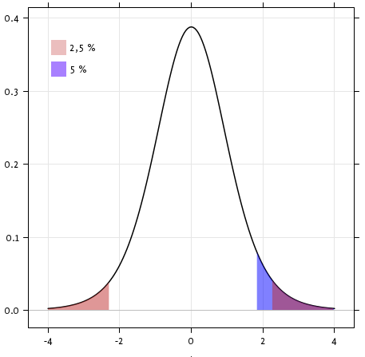

Statistics in Python#
Author: Gaël Varoquaux
Requirements
Standard scientific Python environment (NumPy, SciPy, matplotlib)
To install Python and these dependencies, we recommend that you download Anaconda Python or, preferably, use the package manager if you are under Ubuntu or other linux.
See also
Bayesian statistics in Python: This chapter does not cover tools for Bayesian statistics. Of particular interest for Bayesian modelling is PyMC, which implements a probabilistic programming language in Python.
Read a statistics book: The Think stats book is available as free PDF or in print and is a great introduction to statistics.
import numpy as np
import matplotlib.pyplot as plt
import pandas as pd
Note
Why Python for statistics?
R is a language dedicated to statistics. Python is a general-purpose language with statistics modules. R has more statistical analysis features than Python, and specialized syntaxes. However, when it comes to building complex analysis pipelines that mix statistics with e.g. image analysis, text mining, or control of a physical experiment, the richness of Python is an invaluable asset.
Note
In this document, the Python inputs are represented with the sign “>>>”.
Disclaimer: Gender questions
Some of the examples of this tutorial are chosen around gender questions. The reason is that on such questions controlling the truth of a claim actually matters to many people.
Data representation and interaction#
Data as a table#
The setting that we consider for statistical analysis is that of multiple
observations or samples described by a set of different attributes
or features. The data can than be seen as a 2D table, or matrix, with
columns giving the different attributes of the data, and rows the
observations. For instance, the data contained in
examples/brain_size.csv:
"";"Gender";"FSIQ";"VIQ";"PIQ";"Weight";"Height";"MRI_Count"
"1";"Female";133;132;124;"118";"64.5";816932
"2";"Male";140;150;124;".";"72.5";1001121
"3";"Male";139;123;150;"143";"73.3";1038437
"4";"Male";133;129;128;"172";"68.8";965353
"5";"Female";137;132;134;"147";"65.0";951545
The pandas data-frame#
Note
We will store and manipulate this data in a pandas.DataFrame, from
the pandas module. It is the Python equivalent of
the spreadsheet table. It is different from a 2D numpy array as it has named
columns, can contain a mixture of different data types by column, and has
elaborate selection and pivotal mechanisms.
Creating dataframes: reading data files or converting arrays#
Reading from a CSV file: Using the above CSV file that gives observations of brain size and weight and IQ (Willerman et al. 1991), the data are a mixture of numerical and categorical values:
data = pd.read_csv('examples/brain_size.csv', sep=';', na_values=".", index_col=0)
data
| Gender | FSIQ | VIQ | PIQ | Weight | Height | MRI_Count | |
|---|---|---|---|---|---|---|---|
| 1 | Female | 133 | 132 | 124 | 118.0 | 64.5 | 816932 |
| 2 | Male | 140 | 150 | 124 | NaN | 72.5 | 1001121 |
| 3 | Male | 139 | 123 | 150 | 143.0 | 73.3 | 1038437 |
| 4 | Male | 133 | 129 | 128 | 172.0 | 68.8 | 965353 |
| 5 | Female | 137 | 132 | 134 | 147.0 | 65.0 | 951545 |
| 6 | Female | 99 | 90 | 110 | 146.0 | 69.0 | 928799 |
| 7 | Female | 138 | 136 | 131 | 138.0 | 64.5 | 991305 |
| 8 | Female | 92 | 90 | 98 | 175.0 | 66.0 | 854258 |
| 9 | Male | 89 | 93 | 84 | 134.0 | 66.3 | 904858 |
| 10 | Male | 133 | 114 | 147 | 172.0 | 68.8 | 955466 |
| 11 | Female | 132 | 129 | 124 | 118.0 | 64.5 | 833868 |
| 12 | Male | 141 | 150 | 128 | 151.0 | 70.0 | 1079549 |
| 13 | Male | 135 | 129 | 124 | 155.0 | 69.0 | 924059 |
| 14 | Female | 140 | 120 | 147 | 155.0 | 70.5 | 856472 |
| 15 | Female | 96 | 100 | 90 | 146.0 | 66.0 | 878897 |
| 16 | Female | 83 | 71 | 96 | 135.0 | 68.0 | 865363 |
| 17 | Female | 132 | 132 | 120 | 127.0 | 68.5 | 852244 |
| 18 | Male | 100 | 96 | 102 | 178.0 | 73.5 | 945088 |
| 19 | Female | 101 | 112 | 84 | 136.0 | 66.3 | 808020 |
| 20 | Male | 80 | 77 | 86 | 180.0 | 70.0 | 889083 |
| 21 | Male | 83 | 83 | 86 | NaN | NaN | 892420 |
| 22 | Male | 97 | 107 | 84 | 186.0 | 76.5 | 905940 |
| 23 | Female | 135 | 129 | 134 | 122.0 | 62.0 | 790619 |
| 24 | Male | 139 | 145 | 128 | 132.0 | 68.0 | 955003 |
| 25 | Female | 91 | 86 | 102 | 114.0 | 63.0 | 831772 |
| 26 | Male | 141 | 145 | 131 | 171.0 | 72.0 | 935494 |
| 27 | Female | 85 | 90 | 84 | 140.0 | 68.0 | 798612 |
| 28 | Male | 103 | 96 | 110 | 187.0 | 77.0 | 1062462 |
| 29 | Female | 77 | 83 | 72 | 106.0 | 63.0 | 793549 |
| 30 | Female | 130 | 126 | 124 | 159.0 | 66.5 | 866662 |
| 31 | Female | 133 | 126 | 132 | 127.0 | 62.5 | 857782 |
| 32 | Male | 144 | 145 | 137 | 191.0 | 67.0 | 949589 |
| 33 | Male | 103 | 96 | 110 | 192.0 | 75.5 | 997925 |
| 34 | Male | 90 | 96 | 86 | 181.0 | 69.0 | 879987 |
| 35 | Female | 83 | 90 | 81 | 143.0 | 66.5 | 834344 |
| 36 | Female | 133 | 129 | 128 | 153.0 | 66.5 | 948066 |
| 37 | Male | 140 | 150 | 124 | 144.0 | 70.5 | 949395 |
| 38 | Female | 88 | 86 | 94 | 139.0 | 64.5 | 893983 |
| 39 | Male | 81 | 90 | 74 | 148.0 | 74.0 | 930016 |
| 40 | Male | 89 | 91 | 89 | 179.0 | 75.5 | 935863 |
Warning
Missing values
The weight of the second individual is missing in the CSV file. If we don’t specify the missing value (NA = not available) marker, we will not be able to do statistical analysis.
Creating from arrays: A pandas.DataFrame can also be seen
as a dictionary of 1D ‘series’, eg arrays or lists. If we have 3
numpy arrays:
t = np.linspace(-6, 6, 20)
sin_t = np.sin(t)
cos_t = np.cos(t)
We can expose them as a pd.DataFrame
pd.DataFrame({'t': t, 'sin': sin_t, 'cos': cos_t})
| t | sin | cos | |
|---|---|---|---|
| 0 | -6.000000 | 0.279415 | 0.960170 |
| 1 | -5.368421 | 0.792419 | 0.609977 |
| 2 | -4.736842 | 0.999701 | 0.024451 |
| 3 | -4.105263 | 0.821291 | -0.570509 |
| 4 | -3.473684 | 0.326021 | -0.945363 |
| 5 | -2.842105 | -0.295030 | -0.955488 |
| 6 | -2.210526 | -0.802257 | -0.596979 |
| 7 | -1.578947 | -0.999967 | -0.008151 |
| 8 | -0.947368 | -0.811882 | 0.583822 |
| 9 | -0.315789 | -0.310567 | 0.950551 |
| 10 | 0.315789 | 0.310567 | 0.950551 |
| 11 | 0.947368 | 0.811882 | 0.583822 |
| 12 | 1.578947 | 0.999967 | -0.008151 |
| 13 | 2.210526 | 0.802257 | -0.596979 |
| 14 | 2.842105 | 0.295030 | -0.955488 |
| 15 | 3.473684 | -0.326021 | -0.945363 |
| 16 | 4.105263 | -0.821291 | -0.570509 |
| 17 | 4.736842 | -0.999701 | 0.024451 |
| 18 | 5.368421 | -0.792419 | 0.609977 |
| 19 | 6.000000 | -0.279415 | 0.960170 |
Other inputs: pandas can input data from SQL, excel files, or other formats. See the pandas documentation.
Manipulating data#
data is a pandas.DataFrame, that resembles R’s dataframe:
data.shape # 40 rows and 8 columns
(40, 7)
data.columns # It has columns
Index(['Gender', 'FSIQ', 'VIQ', 'PIQ', 'Weight', 'Height', 'MRI_Count'], dtype='object')
data['Gender'] # Columns can be addressed by name
1 Female
2 Male
3 Male
4 Male
5 Female
6 Female
7 Female
8 Female
9 Male
10 Male
11 Female
12 Male
13 Male
14 Female
15 Female
16 Female
17 Female
18 Male
19 Female
20 Male
21 Male
22 Male
23 Female
24 Male
25 Female
26 Male
27 Female
28 Male
29 Female
30 Female
31 Female
32 Male
33 Male
34 Male
35 Female
36 Female
37 Male
38 Female
39 Male
40 Male
Name: Gender, dtype: object
# Simpler selector
data[data['Gender'] == 'Female']['VIQ'].mean()
np.float64(109.45)
Note
For a quick view on a large dataframe, use its describe
method: pandas.DataFrame.describe().
groupby: splitting a dataframe on values of categorical variables:
groupby_gender = data.groupby('Gender')
for gender, value in groupby_gender['VIQ']:
print((gender, value.mean()))
('Female', np.float64(109.45))
('Male', np.float64(115.25))
groupby_gender is a powerful object that exposes many
operations on the resulting group of dataframes:
groupby_gender.mean()
| FSIQ | VIQ | PIQ | Weight | Height | MRI_Count | |
|---|---|---|---|---|---|---|
| Gender | ||||||
| Female | 111.9 | 109.45 | 110.45 | 137.200000 | 65.765000 | 862654.6 |
| Male | 115.0 | 115.25 | 111.60 | 166.444444 | 71.431579 | 954855.4 |
Note
Use tab-completion on groupby_gender to find more. Other common
grouping functions are median, count (useful for checking to see the
amount of missing values in different subsets) or sum. Groupby
evaluation is lazy, no work is done until an aggregation function is
applied.
data = pd.read_csv("examples/brain_size.csv", sep=";", na_values=".")
# Box plots of different columns for each gender
groupby_gender = data.groupby("Gender")
groupby_gender.boxplot(column=["FSIQ", "VIQ", "PIQ"]);
Exercise 58
What is the mean value for VIQ for the full population?
How many males/females were included in this study?
Hint use ‘tab completion’ to find out the methods that can be called, instead of ‘mean’ in the above example.
What is the average value of MRI counts expressed in log units, for males and females?
Note
groupby_gender.boxplot is used for the plots above (see the plot code
above).
Plotting data#
Pandas comes with some plotting tools (pandas.plotting, using
matplotlib behind the scene) to display statistics of the data in
dataframes:
Scatter matrices:
pd.plotting.scatter_matrix(data[['Weight', 'Height', 'MRI_Count']]);

pd.plotting.scatter_matrix(data[['PIQ', 'VIQ', 'FSIQ']]);
Exercise 59
Plot the scatter matrix for males only, and for females only. Do you think that the 2 sub-populations correspond to gender?
Hypothesis testing: comparing two groups#
For simple statistical tests, we will
use the scipy.stats sub-module of SciPy:
import scipy as sp
See also
SciPy is a vast library. For a quick summary to the whole library, see the scipy chapter.
Student’s t-test: the simplest statistical test#
One-sample tests: testing the value of a population mean#

scipy.stats.ttest_1samp() tests the null hypothesis that the mean
of the population underlying the data is equal to a given value. It returns
the T statistic,
and the p-value (see the
function’s help):
sp.stats.ttest_1samp(data['VIQ'], 0)
TtestResult(statistic=np.float64(30.08809997084933), pvalue=np.float64(1.3289196468727879e-28), df=np.int64(39))
The p-value of \(10^-28\) indicates that such an extreme value of the statistic is unlikely to be observed under the null hypothesis. This may be taken as evidence that the null hypothesis is false and that the population mean IQ (VIQ measure) is not 0.
Technically, the p-value of the t-test is derived under the assumption that the means of samples drawn from the population are normally distributed. This condition is exactly satisfied when the population itself is normally distributed; however, due to the central limit theorem, the condition is nearly true for reasonably large samples drawn from populations that follow a variety of non-normal distributions.
Nonetheless, if we are concerned that violation of the normality assumptions will affect the conclusions of the test, we can use a Wilcoxon signed-rank test, which relaxes this assumption at the expense of test power:
sp.stats.wilcoxon(data['VIQ'])
WilcoxonResult(statistic=np.float64(0.0), pvalue=np.float64(3.488172636231201e-08))
Two-sample t-test: testing for difference across populations#
We have seen above that the mean VIQ in the male and female samples
were different. To test whether this difference is significant (and
suggests that there is a difference in population means), we perform
a two-sample t-test using scipy.stats.ttest_ind():
female_viq = data[data['Gender'] == 'Female']['VIQ']
male_viq = data[data['Gender'] == 'Male']['VIQ']
sp.stats.ttest_ind(female_viq, male_viq)
TtestResult(statistic=np.float64(-0.7726161723275012), pvalue=np.float64(0.44452876778583217), df=np.float64(38.0))
The corresponding non-parametric test is the Mann–Whitney U
test,
scipy.stats.mannwhitneyu().
sp.stats.mannwhitneyu(female_viq, male_viq)
MannwhitneyuResult(statistic=np.float64(164.5), pvalue=np.float64(0.3422886868727315))
Paired tests: repeated measurements on the same individuals#
# Box plot of FSIQ and PIQ (different measures of IQ)
plt.figure(figsize=(4, 3))
data.boxplot(column=["FSIQ", "PIQ"])
<Axes: >
PIQ, VIQ, and FSIQ give three measures of IQ. Let us test whether FISQ and PIQ are significantly different. We can use an “independent sample” test:
sp.stats.ttest_ind(data['FSIQ'], data['PIQ'])
TtestResult(statistic=np.float64(0.465637596380964), pvalue=np.float64(0.6427725009414841), df=np.float64(78.0))
The problem with this approach is that it ignores an important relationship between observations: FSIQ and PIQ are measured on the same individuals. Thus, the variance due to inter-subject variability is confounding, reducing the power of the test. This variability can be removed using a “paired test” or “repeated measures test”:
sp.stats.ttest_rel(data['FSIQ'], data['PIQ'])
TtestResult(statistic=np.float64(1.7842019405859857), pvalue=np.float64(0.08217263818364236), df=np.int64(39))
# Boxplot of the difference
plt.figure(figsize=(4, 3))
plt.boxplot(data["FSIQ"] - data["PIQ"])
plt.xticks((1,), ("FSIQ - PIQ",));

This is equivalent to a one-sample test on the differences between paired observations:
sp.stats.ttest_1samp(data['FSIQ'] - data['PIQ'], 0)
TtestResult(statistic=np.float64(1.7842019405859857), pvalue=np.float64(0.08217263818364236), df=np.int64(39))
Accordingly, we can perform a nonparametric version of the test with
wilcoxon.
sp.stats.wilcoxon(data['FSIQ'], data['PIQ'], method="approx")
WilcoxonResult(statistic=np.float64(274.5), pvalue=np.float64(0.10659492713506856))
Exercise 60
Test the difference between weights in males and females.
Use non parametric statistics to test the difference between VIQ in males and females.
Solution to Exercise 60
Conclusion: we find that the data does not support the hypothesis that males and females have different VIQ.
Linear models, multiple factors, and analysis of variance#
“formulas” to specify statistical models in Python#
A simple linear regression#
Note
From an original example by Thomas Haslwanter.
Given two set of observations, x and y, we want to test the
hypothesis that y is a linear function of x. In other terms:
where \(e\) is observation noise. We will use the statsmodels module to:
Fit a linear model. We will use the simplest strategy, ordinary least squares (OLS).
Test that
coefis non zero.
First, we generate simulated data according to the model:
x = np.linspace(-5, 5, 20)
# To get reproducible values, provide a seed value
rng = np.random.default_rng(27446968)
# normal distributed noise
y = -5 + 3 * x + 4 * rng.normal(size=x.shape)
# Create a data frame containing all the relevant variables
data = pd.DataFrame({'x': x, 'y': y})
# Plot the data
plt.figure(figsize=(5, 4))
plt.plot(x, y, "o");

Then we specify an OLS model and fit it:
import statsmodels.formula.api as smf
model = smf.ols("y ~ x", data).fit()
We can inspect the various statistics derived from the fit:
model.summary()
| Dep. Variable: | y | R-squared: | 0.901 |
|---|---|---|---|
| Model: | OLS | Adj. R-squared: | 0.896 |
| Method: | Least Squares | F-statistic: | 164.5 |
| Date: | Mon, 29 Sep 2025 | Prob (F-statistic): | 1.72e-10 |
| Time: | 12:28:38 | Log-Likelihood: | -51.758 |
| No. Observations: | 20 | AIC: | 107.5 |
| Df Residuals: | 18 | BIC: | 109.5 |
| Df Model: | 1 | ||
| Covariance Type: | nonrobust |
| coef | std err | t | P>|t| | [0.025 | 0.975] | |
|---|---|---|---|---|---|---|
| Intercept | -4.2948 | 0.759 | -5.661 | 0.000 | -5.889 | -2.701 |
| x | 3.2060 | 0.250 | 12.825 | 0.000 | 2.681 | 3.731 |
| Omnibus: | 1.218 | Durbin-Watson: | 1.796 |
|---|---|---|---|
| Prob(Omnibus): | 0.544 | Jarque-Bera (JB): | 0.999 |
| Skew: | 0.503 | Prob(JB): | 0.607 |
| Kurtosis: | 2.568 | Cond. No. | 3.03 |
Notes:
[1] Standard Errors assume that the covariance matrix of the errors is correctly specified.
Terminology:
Statsmodels uses a statistical terminology: the y variable in
statsmodels is called ‘endogenous’ while the x variable is called
exogenous. This is discussed in more detail here.
To simplify, y (endogenous) is the value you are trying to predict,
while x (exogenous) represents the features you are using to make
the prediction.
If the terminology is unfamiliar, you might be able to remember which way
round these go by noticing that there is an x in exogenous.
Exercise 61
Retrieve the estimated parameters from the model above.
Hint: use tab-completion to find the relevant attribute.
Categorical variables: comparing groups or multiple categories#
Let us go back the data on brain size:
data = pd.read_csv('examples/brain_size.csv', sep=';', na_values=".")
We can write a comparison between IQ of male and female using a linear model:
model = smf.ols("VIQ ~ Gender + 1", data).fit()
model.summary()
| Dep. Variable: | VIQ | R-squared: | 0.015 |
|---|---|---|---|
| Model: | OLS | Adj. R-squared: | -0.010 |
| Method: | Least Squares | F-statistic: | 0.5969 |
| Date: | Mon, 29 Sep 2025 | Prob (F-statistic): | 0.445 |
| Time: | 12:28:38 | Log-Likelihood: | -182.42 |
| No. Observations: | 40 | AIC: | 368.8 |
| Df Residuals: | 38 | BIC: | 372.2 |
| Df Model: | 1 | ||
| Covariance Type: | nonrobust |
| coef | std err | t | P>|t| | [0.025 | 0.975] | |
|---|---|---|---|---|---|---|
| Intercept | 109.4500 | 5.308 | 20.619 | 0.000 | 98.704 | 120.196 |
| Gender[T.Male] | 5.8000 | 7.507 | 0.773 | 0.445 | -9.397 | 20.997 |
| Omnibus: | 26.188 | Durbin-Watson: | 1.709 |
|---|---|---|---|
| Prob(Omnibus): | 0.000 | Jarque-Bera (JB): | 3.703 |
| Skew: | 0.010 | Prob(JB): | 0.157 |
| Kurtosis: | 1.510 | Cond. No. | 2.62 |
Notes:
[1] Standard Errors assume that the covariance matrix of the errors is correctly specified.
Link to t-tests between different FSIQ and PIQ#
To compare different types of IQ, we need to create a “long-form” table, listing IQs, where the type of IQ is indicated by a categorical variable:
data_fisq = pd.DataFrame({'iq': data['FSIQ'], 'type': 'fsiq'})
data_piq = pd.DataFrame({'iq': data['PIQ'], 'type': 'piq'})
data_long = pd.concat((data_fisq, data_piq))
data_long
| iq | type | |
|---|---|---|
| 0 | 133 | fsiq |
| 1 | 140 | fsiq |
| 2 | 139 | fsiq |
| 3 | 133 | fsiq |
| 4 | 137 | fsiq |
| ... | ... | ... |
| 35 | 128 | piq |
| 36 | 124 | piq |
| 37 | 94 | piq |
| 38 | 74 | piq |
| 39 | 89 | piq |
80 rows × 2 columns
model = smf.ols("iq ~ type", data_long).fit()
model.summary()
| Dep. Variable: | iq | R-squared: | 0.003 |
|---|---|---|---|
| Model: | OLS | Adj. R-squared: | -0.010 |
| Method: | Least Squares | F-statistic: | 0.2168 |
| Date: | Mon, 29 Sep 2025 | Prob (F-statistic): | 0.643 |
| Time: | 12:28:38 | Log-Likelihood: | -364.35 |
| No. Observations: | 80 | AIC: | 732.7 |
| Df Residuals: | 78 | BIC: | 737.5 |
| Df Model: | 1 | ||
| Covariance Type: | nonrobust |
| coef | std err | t | P>|t| | [0.025 | 0.975] | |
|---|---|---|---|---|---|---|
| Intercept | 113.4500 | 3.683 | 30.807 | 0.000 | 106.119 | 120.781 |
| type[T.piq] | -2.4250 | 5.208 | -0.466 | 0.643 | -12.793 | 7.943 |
| Omnibus: | 164.598 | Durbin-Watson: | 1.531 |
|---|---|---|---|
| Prob(Omnibus): | 0.000 | Jarque-Bera (JB): | 8.062 |
| Skew: | -0.110 | Prob(JB): | 0.0178 |
| Kurtosis: | 1.461 | Cond. No. | 2.62 |
Notes:
[1] Standard Errors assume that the covariance matrix of the errors is correctly specified.
We can see that we retrieve the same values for t-test and corresponding p-values for the effect of the type of iq than the previous t-test:
sp.stats.ttest_ind(data['FSIQ'], data['PIQ'])
TtestResult(statistic=np.float64(0.465637596380964), pvalue=np.float64(0.6427725009414841), df=np.float64(78.0))
Multiple Regression: including multiple factors#
Note
From an original example by Thomas Haslwanter
Consider a linear model explaining a variable z (the dependent
variable) with 2 variables x and y:
Such a model can be seen in 3D as fitting a plane to a cloud of (x, y,
z) points.
# Generate and show the data
x = np.linspace(-5, 5, 21)
# We generate a 2D grid
X, Y = np.meshgrid(x, x)
# To get reproducible values, provide a seed value
rng = np.random.default_rng(27446968)
# Z is the elevation of this 2D grid
Z = -5 + 3 * X - 0.5 * Y + 8 * rng.normal(size=X.shape)
# Plot the data
ax = plt.figure().add_subplot(projection="3d")
surf = ax.plot_surface(X, Y, Z, cmap="coolwarm", rstride=1, cstride=1)
ax.view_init(20, -120)
ax.set_xlabel("X")
ax.set_ylabel("Y")
ax.set_zlabel("Z");

Example: the iris data (examples/iris.csv)
Note
Sepal and petal size tend to be related: bigger flowers are bigger! But is there in addition a systematic effect of species?
data = pd.read_csv('examples/iris.csv')
# Express the names as categories
categories = pd.Categorical(data["name"])
# The parameter 'c' is passed to plt.scatter and will control the color
pd.plotting.scatter_matrix(data, c=categories.codes, marker="o")
fig = plt.gcf()
fig.suptitle("blue: setosa, green: versicolor, red: virginica", size=13);
Let us try to explain the sepal length as a function of the petal width and the category of iris
model = smf.ols("sepal_width ~ name + petal_length", data).fit()
model.summary()
| Dep. Variable: | sepal_width | R-squared: | 0.478 |
|---|---|---|---|
| Model: | OLS | Adj. R-squared: | 0.468 |
| Method: | Least Squares | F-statistic: | 44.63 |
| Date: | Mon, 29 Sep 2025 | Prob (F-statistic): | 1.58e-20 |
| Time: | 12:28:39 | Log-Likelihood: | -38.185 |
| No. Observations: | 150 | AIC: | 84.37 |
| Df Residuals: | 146 | BIC: | 96.41 |
| Df Model: | 3 | ||
| Covariance Type: | nonrobust |
| coef | std err | t | P>|t| | [0.025 | 0.975] | |
|---|---|---|---|---|---|---|
| Intercept | 2.9813 | 0.099 | 29.989 | 0.000 | 2.785 | 3.178 |
| name[T.versicolor] | -1.4821 | 0.181 | -8.190 | 0.000 | -1.840 | -1.124 |
| name[T.virginica] | -1.6635 | 0.256 | -6.502 | 0.000 | -2.169 | -1.158 |
| petal_length | 0.2983 | 0.061 | 4.920 | 0.000 | 0.178 | 0.418 |
| Omnibus: | 2.868 | Durbin-Watson: | 1.753 |
|---|---|---|---|
| Prob(Omnibus): | 0.238 | Jarque-Bera (JB): | 2.885 |
| Skew: | -0.082 | Prob(JB): | 0.236 |
| Kurtosis: | 3.659 | Cond. No. | 54.0 |
Notes:
[1] Standard Errors assume that the covariance matrix of the errors is correctly specified.
Post-hoc hypothesis testing: analysis of variance (ANOVA)#
In the above iris example, we wish to test if the petal length is
different between versicolor and virginica, after removing the effect of
sepal width. This can be formulated as testing the difference between the
coefficient associated to versicolor and virginica in the linear model
estimated above (it is an Analysis of Variance, ANOVA). For this, we
write a vector of ‘contrast’ on the parameters estimated: we want to
test "name[T.versicolor] - name[T.virginica]", with an F-test:
print(model.f_test([0, 1, -1, 0]))
<F test: F=3.2453353465742247, p=0.07369058781700905, df_denom=146, df_num=1>
Is this difference significant?
Exercise 62
Going back to the brain size + IQ data, test if the VIQ of male and female are different after removing the effect of brain size, height and weight.
More visualization: Seaborn for statistical exploration#
Seaborn combines simple statistical fits with plotting on pandas dataframes.
import seaborn
Let us consider a data giving wages and many other personal information on 500 individuals (Berndt, ER. The Practice of Econometrics. 1991. NY: Addison-Wesley).
We first load and arrange the data — view the code for details:
Here are the resulting loaded data.
data
| education | south | sex | experience | union | wage | age | race | occupation | sector | marr | |
|---|---|---|---|---|---|---|---|---|---|---|---|
| 0 | 8 | 0 | female | 21 | 0 | 0.707570 | 35 | 2 | 6 | 1 | 1 |
| 1 | 9 | 0 | female | 42 | 0 | 0.694605 | 57 | 3 | 6 | 1 | 1 |
| 2 | 12 | 0 | male | 1 | 0 | 0.824126 | 19 | 3 | 6 | 1 | 0 |
| 3 | 12 | 0 | male | 4 | 0 | 0.602060 | 22 | 3 | 6 | 0 | 0 |
| 4 | 12 | 0 | male | 17 | 0 | 0.875061 | 35 | 3 | 6 | 0 | 1 |
| ... | ... | ... | ... | ... | ... | ... | ... | ... | ... | ... | ... |
| 529 | 18 | 0 | male | 5 | 0 | 1.055378 | 29 | 3 | 5 | 0 | 0 |
| 530 | 12 | 0 | female | 33 | 0 | 0.785330 | 51 | 1 | 5 | 0 | 1 |
| 531 | 17 | 0 | female | 25 | 1 | 1.366423 | 48 | 1 | 5 | 0 | 1 |
| 532 | 12 | 1 | male | 13 | 1 | 1.298416 | 31 | 3 | 5 | 0 | 1 |
| 533 | 16 | 0 | male | 33 | 0 | 1.186956 | 55 | 3 | 5 | 1 | 1 |
534 rows × 11 columns
Pairplot: scatter matrices#
We can easily have an intuition on the interactions between continuous
variables using seaborn.pairplot() to display a scatter matrix:
seaborn.pairplot(data, vars=['wage', 'age', 'education'], kind='reg');

Categorical variables can be plotted as the hue:
seaborn.pairplot(data, vars=['wage', 'age', 'education'],
kind='reg', hue='sex');

lmplot: plotting a univariate regression#
A regression capturing the relation between one variable and another, eg
wage, and education, can be plotted using seaborn.lmplot():
seaborn.lmplot(y='wage', x='education', data=data);

Testing for interactions#
seaborn.lmplot(y="wage", x="education", hue="sex", data=data);

We can first ask do education and sex separately contribute to wage:
result = smf.ols(formula="wage ~ education + sex", data=data).fit()
result.summary()
| Dep. Variable: | wage | R-squared: | 0.193 |
|---|---|---|---|
| Model: | OLS | Adj. R-squared: | 0.190 |
| Method: | Least Squares | F-statistic: | 63.42 |
| Date: | Mon, 29 Sep 2025 | Prob (F-statistic): | 2.01e-25 |
| Time: | 12:28:44 | Log-Likelihood: | 86.654 |
| No. Observations: | 534 | AIC: | -167.3 |
| Df Residuals: | 531 | BIC: | -154.5 |
| Df Model: | 2 | ||
| Covariance Type: | nonrobust |
| coef | std err | t | P>|t| | [0.025 | 0.975] | |
|---|---|---|---|---|---|---|
| Intercept | 0.4053 | 0.046 | 8.732 | 0.000 | 0.314 | 0.496 |
| sex[T.male] | 0.1008 | 0.018 | 5.625 | 0.000 | 0.066 | 0.136 |
| education | 0.0334 | 0.003 | 9.768 | 0.000 | 0.027 | 0.040 |
| Omnibus: | 4.675 | Durbin-Watson: | 1.792 |
|---|---|---|---|
| Prob(Omnibus): | 0.097 | Jarque-Bera (JB): | 4.876 |
| Skew: | -0.147 | Prob(JB): | 0.0873 |
| Kurtosis: | 3.365 | Cond. No. | 69.7 |
Notes:
[1] Standard Errors assume that the covariance matrix of the errors is correctly specified.
Our next question is — do wages increase more with education for males than females?
Note
The plot above is made of two different fits. We need to formulate a single model that tests for a variance of slope across the two populations. This is done via an “interaction”.
result = smf.ols(formula='wage ~ education + sex + education * sex',
data=data).fit()
result.summary()
| Dep. Variable: | wage | R-squared: | 0.198 |
|---|---|---|---|
| Model: | OLS | Adj. R-squared: | 0.194 |
| Method: | Least Squares | F-statistic: | 43.72 |
| Date: | Mon, 29 Sep 2025 | Prob (F-statistic): | 2.94e-25 |
| Time: | 12:28:44 | Log-Likelihood: | 88.503 |
| No. Observations: | 534 | AIC: | -169.0 |
| Df Residuals: | 530 | BIC: | -151.9 |
| Df Model: | 3 | ||
| Covariance Type: | nonrobust |
| coef | std err | t | P>|t| | [0.025 | 0.975] | |
|---|---|---|---|---|---|---|
| Intercept | 0.2998 | 0.072 | 4.173 | 0.000 | 0.159 | 0.441 |
| sex[T.male] | 0.2750 | 0.093 | 2.972 | 0.003 | 0.093 | 0.457 |
| education | 0.0415 | 0.005 | 7.647 | 0.000 | 0.031 | 0.052 |
| education:sex[T.male] | -0.0134 | 0.007 | -1.919 | 0.056 | -0.027 | 0.000 |
| Omnibus: | 4.838 | Durbin-Watson: | 1.825 |
|---|---|---|---|
| Prob(Omnibus): | 0.089 | Jarque-Bera (JB): | 5.000 |
| Skew: | -0.156 | Prob(JB): | 0.0821 |
| Kurtosis: | 3.356 | Cond. No. | 194. |
Notes:
[1] Standard Errors assume that the covariance matrix of the errors is correctly specified.
Can we conclude that education benefits males more than females?